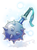
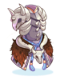

Infinite Space

|
| Spanish |
| This quest or instance is repeatable. | ||
|---|---|---|
| Cooldown | Tickets Available | |
|
Resets at 0:00 |
Solo: 0 | Party: 0 |
Overview
| Requirements | |
|---|---|
| Base Level: | 100 |
| Starting Point: | Pharos Beacon Island (cmd_fild07 54/278) |
| Items: | - |
| Prerequisite(s): | - |
| Rewards | |
| Experience: | - |
| Items: | Shattered Magic Stone |
Pharos Lighthouse, located south east of Comodo, have collapsed and beneath its ruins there seems to be an “Infinite Space” that stretches endlessly. You can warp to the entrance of Infinite Space using the Warper NPC (Instances > Infinite Space), or use the official Kafra Teleport Service from the Kafra staff in Morroc and Comodo (Teleport > Comodo Pharos Beacon) then walk towards the lighthouse on the upper left hand side of the island. Talk with the Reckless Explorer to enter it, and when inside, the party leader can talk to her again to select the difficulty level (Normal or Hard).
Infinite Space is similar to Endless Tower and Endless Cellar; it consists of 50 chambers and in each chamber numerous monsters will spawn. You must clear the room before moving onto the next one. An MVP will spawn in rooms 10, 20, 30, 40, and 50. After defeating the MVP, a treasure chest will appear which will drop more Shattered Magic Stones. Unlike Old Glast Heim, there is no separate instance cooldowns; in other words if you select Normal mode and completed the instance, you must wait 23 hours before you can run it again and try another difficulty level.
These MVPs, mini bosses, and special monsters such as the Infinity Poring, exclusive to the Hard Mode, drop Shattered Magic Stones. These stones are account bound, and can be exchanged for Infinity Weapons or Rift Armor set. You can also use Shattered Magic Stones to enchant Infinity Weapons and Rift Armor set, and reset their enchantments.
You have 1 hour to finish this instance. If you or any party member died inside the instance and got disconnected or returned to the log-in screen, when you log back in you would be back in the instance (but still dead). See October 20th, 2017 patch notes for details.
Notable Enemies
This is a list of notable MVPs that spawn in certain floors of Infinite Space. Other enemies in Infinite Space are more or less identical in terms of appearance and items dropped to their overworld counterparts, however the Infinite Space version of the mobs have more HP. Certain monsters are no longer mini-bosses.
| Image | Name | Level | HP | Size/Race/Element |
|---|---|---|---|---|

|
Infinite Toad | 105 | 900,000 | Medium/Fish/Water 1 |

|
Infinite Vagabond Wolf | 105 | 900,000 | Medium/Brute/Earth 1 |

|
Infinite Vocal | 105 | 900,000 | Medium/Insect/Earth 1 |
| Infinite Eclipse | 105 | 900,000 | Medium/Brute/Neutral 3 | |

|
Infinite Chimera | 105 | 900,000 | Large/Brute/Fire 3 |

|
Infinite Eddga | 110 | 1,850,000 | Large/Brute/Fire 1 |

|
Infinite Osiris | 110 | 2,850,000 | Medium/Undead/Undead 4 |

|
Infinite Phreeoni | 110 | 4,750,000 | Large/Brute/Neutral 3 |

|
Infinite Orc Hero | 110 | 6,650,000 | Large/Demi Human/Earth 2 |

|
Infinite Tao Gunka | 110 | 8,550,000 | Large/Demon/Neutral 3 |
Rewards
The following tables list weapons, equipment, and cards that can be obtained from Infinite Space. Infinity Weapons and Rift Armor Set can be purchased from Relic Appraiser /navi cmd_fild07 57/274 for 50 Shattered Magic Stones each.
Infinity Weapons
All Infinity Weapons are Lv 4 Weapons, have one slot, and require at least Base Level 100 to be equipped.
| Image | Name | Applicable Jobs | Description |
|---|---|---|---|

|
Infinity Dagger [1] | Novice, Swordman Class, Mage Class, Archer Class, Merchant Class, Thief Class, Soul Linker, Ninja | ATK +125
MATK +100 |
|  | Infinity Mace [1] | Rune Knight, Royal Guard, Arch Bishop,
Sura, Mechanic, Genetic |
ATK +155 |

|
Infinity Two Handed Axe [1] | Rune Knight, Royal Guard,
Mechanic, Genetic |
ATK +265 |

|
Infinity Bow [1] | Ranger, Minstrel, Wanderer, Shadow Chaser | ATK +160 |

|
Infinity Two Handed Sword [1] | Rune Knight, Royal Guard | ATK +230 |

|
Infinity Two Handed Staff [1] | Warlock, Sorcerer | ATK +30
MATK +170 |

|
Infinity Violin [1] | Minstrel | ATK +150 |

|
Infinity Whip [1] | Wanderer | ATK +150 |

|
Infinity Shuriken [1] | Kagerou, Oboro | ATK +150
MATK +40 |

|
Infinity Revolver [1] | Rebellion | ATK +175 |
Rift Armor Set
All parts of the Rift Armor set have one slot, can be equipped by all job classes, and require at least Base Level 100 to be equipped.
| Image | Name | Description |
|---|---|---|

|
Ancient Decoration of Rift [1] | MaxHP +1000.
If refined to +7, MaxHP +400. If refined to +9, MaxHP +600. |
|  | Ancient Armor of Rift [1] | MaxHP +500, MaxSP -100.
If refined to +6, MaxHP +400. If refined to +9, MaxHP +600. If equipped with Ancient Decoration of Rift, MaxSP +100, uninterruptible skill cast. If equipped with Manteau of Rift and Shoes of Rift, MaxHP +1000, increase HP restored when the wearer receives healing from others by 5%, increase the wearer's healing effectiveness by 5%. The total refine level of the armor, garment, and footgear further increases both healing rate, up to 30. |

|
Manteau of Rift [1] | MaxHP +300, MaxSP -50.
If refined to +7 or higher, additional MaxHP +400. If refined to +9 or higher, additional MaxHP +600. |

|
Shoes of Rift [1] | MaxHP +300, MaxSP -50.
If refined to +7 or higher, additional MaxHP +400. If refined to +9 or higher, additional MaxHP +600. |
Infinite Monster Cards
| Card | Type | Effects |
|---|---|---|
| Footgear Card | Perfect Dodge +2.
If refined to +7, Perfect Dodge +2. If refined to +9, Perfect Dodge +3. | |
| Footgear Card | ATK +10.
If refined to +7, ATK +10. If refined to +9, ATK +15. | |
| Footgear Card | MDEF +5.
If refined to +7, MDEF +10. If refined to +9, MDEF +15. Therefore at +9 the Infinite Vocal Card will grant you +25 MDEF. | |
| Footgear Card | MaxHP +300.
If refined to +7, MaxHP +300. If refined to +9, MaxHP +400. | |
| Garment Card | MaxHP +8%, MaxSP +4%.
When equipped with a footgear compounded with: Infinite Toad, Infinite Vagabond Wolf, Infinite Eclipse, or Infinite Vocal Card, ATK +10%, MATK +10%. | |
| Accessory Card | When the wearer kills a monster with melee physical attack,
recover 300 HP. | |
| Footgear Card | When the wearer receives physical attack,
50% chance to autocast Provoke Lv 10 on the enemy. | |
| Weapon Card | CRIT +100. | |
| Headgear Card | When the wearer receives magic damage,
100% chance to Stun the enemy. VIT +3. | |
| Armor Card | MaxHP +10,000. AGI -10. |
Enchantments
All Infinity Weapons and all parts of Rift Armor set can be enchanted with the Relic Reinforcer /navi cmd_fild07 60/274 for 20 Shattered Magic Stones per attempt. The weapon/armor must be equipped for the Relic Enforcer to enchant them.
An equipment can receive enchantment on the fourth (right most slot) and third slots. You can select one among the three enchantment types (Physical, Caster, Ranged).
Resetting enchantments costs 30 Shattered Magic Stones, and will remove all enchantments. There is a 30% chance of the equipment being destroyed when resetting enchantments.
| Equipment | Enchantment Group | Physical | Caster | Ranged |
|---|---|---|---|---|
| Infinity Weapons | Group 1 | STR +1, STR +2 | INT +1, INT +2 | DEX +1, DEX +2 |
| Group 2 | Fighting Spirit 1 ~ Fighting Spirit 8 | Spell 1 ~ Spell 8 | Expert Archer 1 ~ Expert Archer 8 | |
| Rift Armor and Shoes | Group 1 | STR +1 ~ STR +4 | INT +1 ~ INT +4 | DEX +1 ~ DEX +4 |
| Group 2 | MaxHP +100 ~ MaxHP +300 | MaxSP +25 ~ MaxSP +75 | MaxSP +25 ~ MaxSP +75 | |
| Rift Decoration and Manteau | Group 1 | STR +1 ~ STR +4 | INT +1 ~ INT +4 | DEX +1 ~ DEX +4 |
| Group 2 | MaxHP +1% ~ MaxHP +5% | MaxHP +1% ~ MaxHP +5% | MaxHP +1% ~ MaxHP +5% |